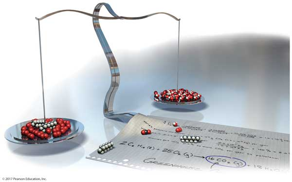

Chapter 4—Reactions in Aqueous Solutions

Chapter 4 powerpoint notes.
Simulations
Concentration
Watch your solution change color as you mix chemicals with water. Then check molarity with the concentration meter. What are all the ways you can change the concentration of your solution? Switch solutes to compare different chemicals and find out how concentrated you can go before you hit saturation!

| Click to Run |
Molarity
What determines the concentration of a solution? Learn about the relationships between moles, liters, and molarity by adjusting the amount of solute and solution volume. Change solutes to compare different chemical compounds in water.

| Click to Run |
A molecular view of the dissolving process
Impact on potential energy when a substance dissolves in water. Add water to a substance and observe the impact on potential energy as the substance dissolves. Observe the interactions between molecules as the substance dissolves over time and watch what happens to the potential energy of the system as dissolving occurs.
Useful Video Tutorials
Determining Oxidation Numbers: